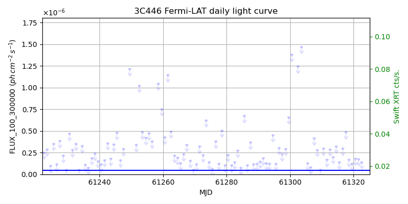
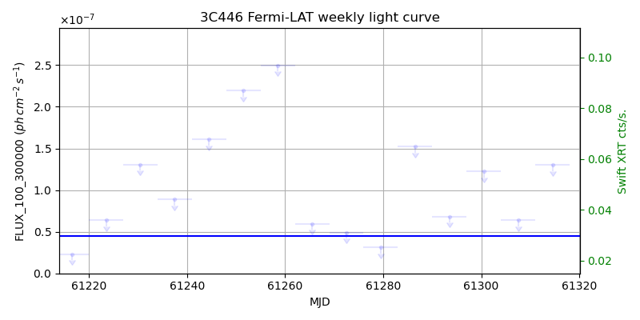
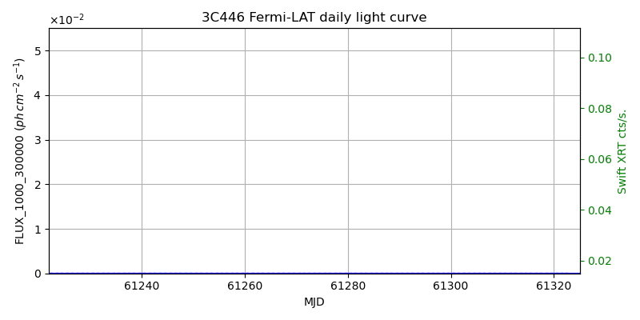
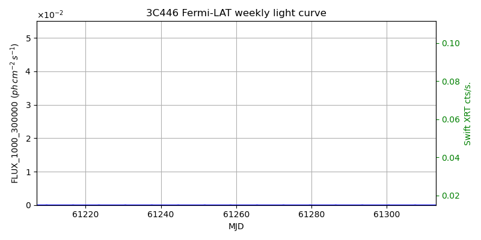

LAT Lightcurve site: https://fermi.gsfc.nasa.gov/ssc/data/access/lat/msl_lc/source/3C_446
Swift site: https://www.swift.psu.edu/monitoring/source.php?source=3C446
NED: Query
Time of last update of this page: UT: 2026-10-10 15:29 (MJD: 61323.646)
| Property | Value |
|---|---|
| R.A. | 22:25:47.28 |
| Dec. | -4:57:00.0 |
| z | 1.404 |
| 3FGL SpectrumType | PowerLaw |
| 3FGL PL Index | 2.36 |
| 3FGL Flux_100_300000 | 4.44e-08 1 / (s cm2) |
| 3FGL Flux_1000_300000 | 1.95e-09 1 / (s cm2) |
| 3FGL Flux >200 GeV | 1.45e-12 1 / (s cm2) |
| 3FGL Extrap. Crab >200 GeV | 0.01 |
| 3FGL Flux After EBL Absorption >200GeV | 3.92e-15 1 / (s cm2) |
| 3FGL EBL Crab Fraction >200GeV | 0.00 |

| MJD | dMJD | Flux | dFlux | Frac3FGL | FracCrab>200GeV | EBLFracCrab>200GeV |
|---|---|---|---|---|---|---|
| 61318.50 | 0.50 | 1.68e-07 | 0.00e+00 | 0.00 | 0.00 | 0.00 |
| 61319.50 | 0.50 | 1.23e-07 | 0.00e+00 | 0.00 | 0.00 | 0.00 |
| 61320.50 | 0.50 | 1.84e-07 | 0.00e+00 | 0.00 | 0.00 | 0.00 |
| 61321.50 | 0.50 | 1.77e-07 | 0.00e+00 | 0.00 | 0.00 | 0.00 |
| 61322.50 | 0.50 | 1.41e-07 | 0.00e+00 | 0.00 | 0.00 | 0.00 |

| MJD | dMJD | Flux | dFlux | Frac3FGL | FracCrab>200GeV | EBLFracCrab>200GeV |
|---|---|---|---|---|---|---|
| 61286.50 | 3.50 | 1.52e-07 | 0.00e+00 | 0.00 | 0.00 | 0.00 |
| 61293.50 | 3.50 | 6.83e-08 | 0.00e+00 | 0.00 | 0.00 | 0.00 |
| 61300.50 | 3.50 | 1.22e-07 | 0.00e+00 | 0.00 | 0.00 | 0.00 |
| 61307.50 | 3.50 | 6.42e-08 | 0.00e+00 | 0.00 | 0.00 | 0.00 |
| 61314.50 | 3.50 | 1.30e-07 | 0.00e+00 | 0.00 | 0.00 | 0.00 |

| MJD | dMJD | Flux | dFlux | Frac3FGL | FracCrab>200GeV | EBLFracCrab>200GeV |
|---|---|---|---|---|---|---|
| 61318.50 | 0.50 | 5.23e-08 | 0.00e+00 | 0.00 | 0.00 | 0.00 |
| 61319.50 | 0.50 | 2.04e-08 | 0.00e+00 | 0.00 | 0.00 | 0.00 |
| 61320.50 | 0.50 | 5.13e-08 | 0.00e+00 | 0.00 | 0.00 | 0.00 |
| 61321.50 | 0.50 | 1.81e-08 | 0.00e+00 | 0.00 | 0.00 | 0.00 |
| 61322.50 | 0.50 | 1.97e-08 | 0.00e+00 | 0.00 | 0.00 | 0.00 |

| MJD | dMJD | Flux | dFlux | Frac3FGL | FracCrab>200GeV | EBLFracCrab>200GeV |
|---|---|---|---|---|---|---|
| 61286.50 | 3.50 | 4.29e-09 | 0.00e+00 | 0.00 | 0.00 | 0.00 |
| 61293.50 | 3.50 | 2.63e-09 | 0.00e+00 | 0.00 | 0.00 | 0.00 |
| 61300.50 | 3.50 | 3.26e-08 | 0.00e+00 | 0.00 | 0.00 | 0.00 |
| 61307.50 | 3.50 | 6.67e-09 | 0.00e+00 | 0.00 | 0.00 | 0.00 |
| 61314.50 | 3.50 | 3.73e-09 | 0.00e+00 | 0.00 | 0.00 | 0.00 |
--------------------------------------------------------- Using user-supplied coords: 22:25:47.28 -4:57:00.0 2000 --------------------------------------------------------- FLWO UT night of: 2026-10-11 Local Sid. @ Midnight: 00:55 Sunset (-15.0) (local, UT): 19:04 02:04 Sunrise (-15.0) (local, UT): 05:18 12:18 Moonrise (local, UT): Moonset (local, UT): Moon phase: 0.01 --------------------------------------------------------- AzTime LSID UT Obj_el Obj_az Mn_el Mn_az Sep. --------------------------------------------------------- 19:04 19:58 02:04 39.3 129.2 -16.1 264.2 134.6 19:34 20:29 02:34 43.9 137.0 -22.3 267.8 134.3 20:04 20:59 03:04 47.9 146.1 -28.5 271.5 134.0 20:34 21:29 03:34 51.0 156.7 -34.7 275.4 133.7 21:04 21:59 04:04 52.9 168.4 -40.8 279.7 133.4 21:34 22:29 04:34 53.5 180.9 -46.8 284.6 133.1 22:04 22:59 05:04 52.7 193.3 -52.7 290.5 132.7 22:34 23:29 05:34 50.6 205.0 -58.4 297.7 132.4 23:04 23:59 06:04 47.4 215.3 -63.6 307.3 132.0 23:34 00:29 06:34 43.3 224.2 -68.1 320.3 131.7 00:04 00:59 07:04 38.5 231.9 -71.3 338.2 131.3 00:34 01:29 07:34 33.3 238.5 -72.6 0.4 131.0 01:04 01:59 08:04 27.7 244.2 -71.5 22.7 130.6 01:34 02:30 08:34 21.8 249.4 -68.3 40.8 130.2 02:04 03:00 09:04 15.7 254.0 -63.9 54.1 129.9 02:34 03:30 09:34 9.6 258.3 -58.7 63.8 129.5 03:04 04:00 10:04 3.4 262.4 -53.1 71.2 129.2 03:34 04:30 10:34 -1.9 266.3 -47.3 77.2 128.8 04:04 05:00 11:04 -9.6 270.2 -41.4 82.2 128.5 04:34 05:30 11:34 -16.0 274.3 -35.3 86.6 128.2 05:04 06:00 12:04 -22.3 278.5 -29.2 90.6 127.9 05:18 06:14 12:18 -25.2 280.4 -26.5 92.4 127.7 --------------------------------------------------------- Source never above horizon of 55.0 deg. Dark hours >55 deg.: 0.00